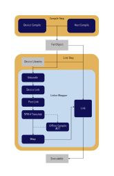

Proposed design for offloading model¶
Introduction¶
This document covers the proposed design for using the new offloading model for the DPC++ Compiler. This leverages the existing community Offloading design OffloadingDesign which covers the Clang driver and code generation steps for creating offloading applications.
The current offloading model is completely encapsulated within the Clang Compiler Driver requiring the driver to perform all of the additional steps for generating the host and device compilation passes. The Driver is also responsible for initiating any of the link-time processing that occurs for each device target.
The updated offloading model removes much of the functionality that is
performed during the link phase of the offloading compilation from the driver
and moves it to a clang-linker-wrapper tool.
Below is a general representation of the overall offloading flow that is
performed during a full compilation from source to final executable. The
compiler driver is responsible for creating the fat object and the
clang-linker-wrapper tool is responsible for the general functionality that is
performed during the link.

Diagram 1: General Offload Flow
Fat Binary Generation¶
The generation of the fat binary will be controlled by the driver. The model from the community is generating the fat binary as a secondary process when creating the host object. Generation will be separated from the host compilation step. This is being done to enable proper support for using an external host compiler as well as taking advantage of potential parallelism during compilation of both the host and target device binaries.
The fat object in the new model is generated during the host compilation. The host compilation takes an additional argument which points to the device binary which will be embedded in the final object. Generation will be separated out to allow for potential parallelism during compilation of both the host and target device binaries.

Diagram 2: Fat Object Generation
Packager¶
When dealing with multiple device binaries, an additional step is performed to
package the multiple device binaries before being added to the host object.
This additional step is performed with the clang-offload-packager taking
image inputs containing information relating to the target triple,
architecture setting and offloading kind.
The clang-offload-packager is run during ‘fat object’ generation regardless
of the number of device binaries being added to the conglomerate fat object.
The device binaries are contained in what is designated as an ‘Offload Binary’.
These binaries can reside in a variety of binary formats including Bitcode
files, ELF objects, executables and shared objects, COFF objects, archives or
simply stored as an offload binary.
We should have the ability to package SPIR-V based device binaries in the offload section of any given binary. These device binaries will be packaged as normal with the packager and placed within the given section.
Example usage of the external clang-offload-packager call:
clang-offload-packager --image=file=<name>,triple=<triple>,kind=<kind>
Clang Linker Wrapper¶
The clang-linker-wrapper provides the interface to perform the needed link
steps when consuming fat binaries. The linker wrapper performs a majority of
the work involved during the link step during an offload compilation,
significantly reducing the amount of work that is occuring in the compiler
driver. From the compilation perspective, the linker wrapper replaces the
typical call to the host link. This allows for the responsibility of the
compiler driver to be nearly identical when performing a regular compilation
vs an offloading compilation.
From a high level, using the clang-linker-wrapper provides a few benefits:
Moves all of the device linking responsibility out of the compiler driver.
Allows for a more direct ability to perform linking for offloading without requiring the use of the driver, using more linker like calls.
Provides additional flexibility with the ability to dynamically modify the toolchain execution.
Example usage of the external clang-linker-wrapper call:
clang-linker-wrapper <wrapper opts> -- <linker opts>
Device Extraction¶
During the compilation step, the device binaries are embedded in a section of
the host binary. When performing the link, this section is extracted from the
object and mapped according to the device kind. The clang-linker-wrapper
is responsible for examining all of the input binaries, grabbing the embedded
device binaries and determining any additional device linking paths that need
to be taken.
For example, when an embedded device binary is of the OFK_SYCL kind and of
the spir64_gen architecture triple, the resulting extracted binary is linked,
post-link processed and converted to SPIR-V before being passed to ocloc to
generate the final device binary. Options passed via --gen-tool-arg= will
be applied to the ocloc step as well.
Binaries generated during the offload compilation will be ‘bundled’ together to create a conglomerate fat binary. Depending on the type of binary, the device is embedded as follows:
Objects¶
Object types considered are COFF objects, ELF executables, ELF relocatable
objects and ELF shared objects. The device section of the object is in a
section marked by .llvm.offloading for COFF objects. For ELF files, there is
a section marked with the LLVM_OFFLOADING type.
Bitcode¶
The section which contains the offloading data is from the .llvm.offloading
section within the llvm.embedded.object metadata.
Offload Binary¶
The binary itself can be represented by just an offload binary, not requiring to be in a section of another binary. This representation is used for any kind of device only binary that is created. The device only binaries are represented by the file generated from the Packager.
Archives¶
Each item in the archive will be extracted and will be individually checked for the file type, properly performing extraction based on the file types already listed above.
Support of existing fat object format¶
The current model generates fat objects using the clang-offload-bundler
tool. This tool creates a binary that contains individual sections that are
labeled with __CLANG_OFFLOAD_BUNDLE__kind-triple. This format does not
match the new format as described above. To enable an ease of transition
from the old model to the new model, support will be added that allows for
support of identifying and extracting device binaries that are using the old
model.
It is expected that all new binaries generated with the updated offloading
model will represent the embedded fat object format, moving away from the
clang-offload-bundler usage. We will not support a mixing of fat object
formats such as objects created with the bundler combined with embedded objects
in a single archive or objects created with an embedded offload section and
additional sections generated with the bundler.
Device Linking¶
During this phase, all of the individual device binaries that are extracted and
are associated with a given target are worked on given the type of binary we
are working with. The default device code is typically represented in LLVM-IR
which requires an additional link step of the device code before being
wrapped and integrated into the final executable. As mentioned in
Packager device representation in SPIR-V should be considered
with the ability to link native SPIR-V modules. Performing the device link
against LLVM-IR is performed by llvm-link.
To reduce the potential size of the linked device binary, an additional host
link step is performed to gather dependency information when static device
libraries are being compiled. This information is sent through the
clang-offload-deps tool to generate a dependency IR file which is used
during the device link step.
The use of the clang-linker-wrapper introduces the support of LTO for device code. We can leverage this and move away from the dependency gathering information step with ‘clang-offload-deps’ and use thinLTO for device code.
There are multiple device linking steps that also occur. The first step links
together all of the objects and the required device libraries. The second is
performed including all of optional device libraries, the static device
libraries and the dependency information that was gathered above. This link
step is performed with --only-needed to streamline the final device binary.
A list of device libraries that need to linked in with user code is provided by
the driver. The driver is also responsible for letting the
clang-linker-wrapper know the location of the device libraries.
Option |
Expected Behavior |
|---|---|
|
A comma separated list of device libraries that are linked during the device link |
|
The location in which the device libraries reside |
Table: Options to pass device libraries to the clang-linker-wrapper
The device libraries are controlled via the -fno-sycl-device-lib=arg option
where the driver determines based on this option which libraries to tell the
linker wrapper to pull in.
Post-link and SPIR-V translation¶
After the device binaries are linked together, two additional steps are performed to prepare the device binary for consumption by an offline compilation tool for AOT or to be wrapped for JIT processing.
The sycl-post-link tool is used after the device link is performed,
applying any changes such as optimizations and code splitting before passing
off to the llvm-spirv tool, which translates the LLVM-IR to SPIR-V.
Option |
Expected Behavior |
|---|---|
|
Options that will control sycl-post-link step |
|
Options that will control llvm-spirv step |
Table: Options to pass sycl-post-link and llvm-spirv options to the clang-linker-wrapper
Options that will be used by clang-linker-wrapper when invoking the sycl-post-link
tool are provided by the driver via the --sycl-post-link-options=<arg> option.
Options that will be used by clang-linker-wrapper when invoking the llvm-spirv
tool are provided by the driver via the --llvm-spirv-options=<arg> option.
Ahead Of Time Compilation¶
The updated offloading model will integrate the Ahead of Time (AOT) compilation behaviors into the clang-linker-wrapper. The actions will typically take place after the device link, post link, and LLVM-IR to SPIR-V translation steps.
Regardless of the AOT target, the flow is similar, only modifying the offline compiler that is used to create the target device image. It is expected that the offline compiler will also use unique command lines specific to the tool to create the image.
To support the needed option passing triggered by use of the
-Xsycl-target-backend option and implied options based on the optional
device behaviors for AOT compilations for GPU new command line interfaces
are needed to pass along this information.
Target |
Triple |
Offline Tool |
Option for Additional Args |
|---|---|---|---|
CPU |
spir64_x86_64 |
opencl-aot |
|
GPU |
spir64_gen |
ocloc |
|
FPGA |
spir64_fpga |
aoc/opencl-aot |
|
Table: Ahead of Time Info
To complete the support needed for the various targets using the
clang-linker-wrapper as the main interface, a few additional options will
be needed to communicate from the driver to the tool. Further details of usage
are given further below.
Option Name |
Purpose |
|---|---|
|
Tells the link step to perform ‘early’ or ‘image’ processing to create archives for FPGA |
|
Provide the number of parallel jobs that will be used when processing split jobs |
Table: Additional Options for clang-linker-wrapper
The clang-linker-wrapper provides an existing option named -wrapper-jobs
that may be useful for our usage.
spir64_gen support¶
Compilation behaviors involving AOT for GPU involve an additional call to
the OpenCL Offline compiler (OCLOC). This call occurs after the post-link
step performed by sycl-post-link and the SPIR-V translation step which is done
by llvm-spirv. Additional options passed by the user via the
-Xsycl-target-backend=spir64_gen <opts> command as well as the implied
options set via target options such as -fsycl-targets=intel_gpu_skl
will be processed by a new options to the wrapper, --gen-tool-arg=<arg>
To support multiple target specifications, for instance:
-fsycl-targets=intel_gpu_skl,intel_gpu_pvc, multiple --gen-tool-arg
options can be passed on the command line. Each instance will be considered
a separate OCLOC call passing along the <args> as options to the OCLOC call.
The compiler driver will be responsible for putting together the full option
list to be passed along.
-fsycl -fsycl-targets=spir64_gen,intel_gpu_skl -Xsycl-target-backend=spir64_gen “-device pvc -options -extraopt_pvc” -Xsycl-target-backend=intel_gpu_skl “-options -extraopt_skl”
Example: spir64_gen enabling options
–gen-tool-arg=”-device pvc -options extraopt_pvc” –gen-tool-arg=”-device skl -options -extraopt_skl”
Example: clang-linker-wrapper options
Each OCLOC call will be represented as a separate device binary that is individually wrapped and linked into the final executable.
Additionally, the syntax can be expanded to enable the ability to pass specific
options to a specific device GPU target for spir64_gen. The syntax will
resemble --gen-tool-arg=<arch> <arg>. This corresponds to the existing
option syntax of -fsycl-targets=intel_gpu_arch where arch can be a fixed
set of targets.
spir64_fpga support¶
Compilation behaviors involving AOT for FPGA involve an additional call to
either aoc (for Hardware/Simulation) or opencl-aot (for Emulation). This
call occurs after the post-link step performed by sycl-post-link and the
SPIR-V translation step performed by llvm-spirv. Additional options passed
by the user via the -Xsycl-target-backend=spir64_fpga <opts> command will be
processed by a new options to the wrapper,
--fpga-tool-arg=<arg>
The FPGA target also has support for additional generated binaries that contain intermediate files specific for FPGA. These binaries (aoco, aocr and aocx) can reside in archives and are treated differently than traditional device binaries.
Generation of the AOCR and AOCX type binary is triggered by the command line
option -fsycl-link, where -fsycl-link=image creates AOCX archives and
-fsycl-link=early generates AOCR archives. The files generated by these
options are handled in a specific manner when encountered.
Any archive with an AOCR type device binary will have the AOCR binary
extracted and passed to aoc to produce an AOCX final image. This final
image is wrapped and added to the final binary during the host link. The use
of -fsycl-link=image with an AOCR binary will create an AOCX based archive
instead of completing the host link. Any archive with an AOCX type device
binary skips the aoc step and is wrapped and added to the final binary during
the host link. Archives with any AOCO device binaries are extracted and passed
through to aoc -library-list=<listfile>
As the clang-linker-wrapper is responsible for understanding the archives
that are added on the command line, it will need to know when to look for
these unique device binaries based on the expected compilation targets. The
behavior of creating the AOCX/AOCR type archive will be triggered via an
additional command line option specified by the driver when -fsycl-link
options are used. The --fpga-link=<type> option will tell the wrapper when
these handlings need to occur.
When using the -fintelfpga option to enable AOT for FPGA, there are
additional expectations during the compilation. Use of the option will enable
debug generation and also generate dependency information. The dependency
generation should be packaged along with the device binary for use during
the link phase. It is expected that the full fat object, containing host,
device and dependency file is generated before being passed to the link phase.
The dependency information is only used when compiling for hardware.
The clang-linker-wrapper tool will be responsible to determine which FPGA
tool is being used during the AOT device compilation phase. The use of
-simulation or -hardware as passed in by --fpga-tool-arg signifies
which tool is used.
spir64_x86_64 support¶
Compilation behaviors involving AOT for CPU involve an additional call to
opencl-aot. This call occurs after the post-link step performed by
sycl-post-link and the SPIR-V translation step performed by llvm-spirv.
Additional options passed by the user via the
-Xsycl-target-backend=spir64_x86_64 <opts> command will be processed by a new
option to the wrapper, --cpu-tool-arg=<arg>
Wrapping of device image¶
Once the device binary is pulled out of the fat binary, the binary must be
wrapped and provided the needed entry points to be used during execution. This
is performed during the link phase and controlled by the clang-linker-wrapper.
It is expected that the wrap information that is generated to be wrapped
around the device binary will match current wrapping information that is used
for the existing offload model. The wrapping in the old model is using the
clang-offload-wrapper tool.
Integration of llvm-foreach¶
Use of llvm-foreach is used frequently during the offloading process. The
functionality was introduced due to the toolchain building limitations of the
driver and the need perform multiple compilations during a specific step of
the compilation. For example, the support for device code splitting performed
by the sycl-post-link tool would require consumers of the split code to work
each item individually. The driver toolchain does not know that this split
occurs, or how many splits were performed. llvm-foreach permits this
obfuscation.
With the new model, the compilation sequence is built dynamically within the
clang-linker-wrapper, allowing for the use of llvm-foreach to become
obsolete. The clang-linker-wrapper is then responsible for performing the
needed individual calls work item which can be done using parallel for.
Beyond llvm-foreach and similar job hiding tools¶
Tools like llvm-foreach, file-table-tform, spirv-to-ir-wrapper were all
introduced to provide a way to manipulate behaviors that could only be
determined at runtime of the compiler toolchain. These were needed to work
around the fact that the toolchain commands constructed by the driver is a fixed
state of commands.
Moving the functionality into clang-linker-wrapper presents the opportunity
step away from the static command construction and create the call chain on
the fly based on real time output from corresponding tools being called.
Host Link¶
The final host link is also performed by the linker wrapper. This link is built upon the full link command line as constructed by the compiler driver, including all libraries and the linked/wrapped device binaries to complete the compilation process.
The provided command line for the final host link step contains the full list of libraries and objects to be linked against. The expectation is for this list to be complete. With the old model, the host objects are directly passed to the host link step. The device objects are processed separately. As we are passing the full command line to the link step, the objects provided will need to be full fat objects. This is different from the old model which will require for an additional step before the link to create the full fat object that is properly represented on the host link command line. This additional step is necessary due to the fact that we are creating the fat objects during a separate step as opposed to integrating the offload binaries during the host object generation. See Fat Binary Generation.
Transitioning from old model to new model¶
The binary representation of the fat objects is not equivalent when dealing
with differences between the old and the new model. Behavior of the new
model will be guarded by the --offload-new-driver compiler switch. This will
allow for implementation of the model without disturbing the existing behavior.
When we are ready to make the switch over, it is a matter of making the
switch the default mode.
Initial representation of the fat objects will be represented by the existing
format created by the clang-offload-bundler. This will allow for older
binaries to continue to be consumed with the updated offloading model. We will
transition to the packager representation at a future date.